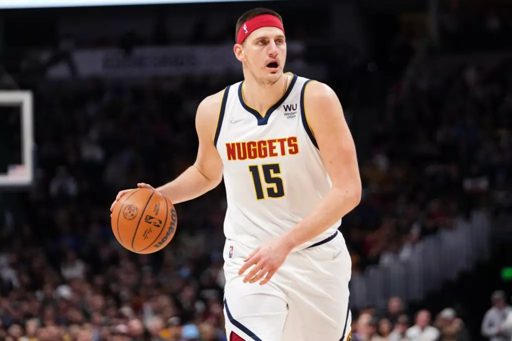

Arremesso: Em inglês, “shot”. É quando o jogador lança a bola na direção da cesta. Nesse fundamento, Stephen Curry (na foto abaixo) é mestre.
Backdoor: Ocorre quando um jogador recebe um passe após se livrar da marcação com um drible de corpo.
Bandeja: Em inglês1, Lay up. A bandeja é quando o jogador faz a cesta bem próxima do aro. Normalmente é realizada com o atleta fazendo duas passadas antes de saltar, com a primeira passada curta e a segunda mais longa.
Crossover: Em tradução livre, significa “cruzar”. Pode ser considerado um drible e ocorre quando o jogador cruza a bola na frente do corpo para se livrar de um marcador. Esse é mais um recurso muito utilizado por Stephen Curry, do Golden State Warriors.
Dunk: É a “enterrada”, um dos movimentos mais conhecidos do basquete. Ocorre quando o atleta dá um salto e “enterra” a bola na cesta para marcar os pontos. Pode ser realizada com uma ou com as duas mãos. Double-double: Ocorre quando um jogador alcança a marca de dois dígitos em duas estatísticas diferentes de uma partida. Por exemplo: mais de 10 pontos e mais de 10 rebotes.
Escolta: É o nome de uma das posições dos jogadores na quadra. É o mesmo que o ala-armador.
Field goal (ou basket):É a cesta. Mas você já sabia, né?
Goaltending:Ocorre quando a bola é interceptada quando está quase entrando na cesta ou também quando um jogador bloqueia contra a tabela ou toca na bola enquanto ela está em uma espécie de “cilindro imaginário” acima do aro. Esta falta pode ser cometida por um atacante ou um defensor.
Hang time:É o tempo que um jogador consegue ficar no ar durante um salto ou uma enterrada. O norte-americano Michael Jordan, um dos maiores atletas de todos os tempos, ficou famoso por conseguir “parar no ar” durante os saltos. Por isso recebeu o apelido de Air Jordan.
Jordan, considerado por muitos como o maior jogador da história do basquete, se destacou por "parar no ar".
Infiltração:É um movimento de ataque em que um jogador passa pela defesa adversária driblando. A jogada é realizada em velocidade pelo atleta, que usa uma área da quadra chamada de garrafão até chegar na cesta e marcar os pontos, ser interceptado ou receber uma falta.
Jump shot: É o nome dado ao arremesso efetuado enquanto o jogador ainda está no ar. Kevin Durant é mestre nesse movimento.
Key:Gíria que quer dizer garrafão. O motivo para o apelido é que, nos anos 1950, os garrafões nos EUA, principalmente na NBA, tinham o formato parecido com o de uma chave.
Público costuma vibrar muito quando lances no "key" acontecem. — Foto: Getty Images | Divulgação
Losing streak:Os norte-americanos costumam usar essa expressão quando uma equipe está sofrendo uma sequência de derrotas em um campeonato.
MVP:Sigla para most valluable player (jogador mais valioso, da tradução livre), é o título concedido ao melhor jogador da liga profissional de basquete dos Estados Unidos, a NBA. Em 2017, o MVP foi para Russell Westbrook. O jogador do Oklahoma City Thunder.

Nikola_Jokic,o MVP de,2022
Non looking pass:É considerado uma espécie de drible. Ocorre quando o jogador faz um passe sem olhar para onde lançou a bola. No futebol, o movimento ficou famoso com o meio-campo Ronaldinho Gaúcho. No basquete, Stephen Curry é o mestre da arte de passar a bola sem olhar.
Overtime: É a prorrogação no tempo de jogo
Pick and roll:É uma jogada feita em dupla. Um atleta (geralmente um pivô ou um ala) faz um bloqueio no jogador que está marcando o seu companheiro. Geralmente ele está batendo bola (e é geralmente um armador). Esse é o “pick”. E, quando se vira rapidamente, o “roll”, recebe um passe do colega para fazer a cesta.
Playoffs:Termo usado para definir as partidas finais do campeonato. Na NBA são sete partidas; na NBB, cinco.
Point Guard:É o jogador responsável pela organização das jogadas. É uma espécie de “camisa 10” do futebol, o cérebro do time. Magic Johnson, ex-jogador do Los Angeles Lakers, foi um dos melhores de todos os tempos.
Power forward (ou center):É o jogador responsável por ajudar na defesa e também arremessar em busca de pontos para a equipe.
Quadruple-double:Estatística de jogo muito rara, ocorre quando um atleta atinge a marca de dois dígitos nos números de pontuação em quatro estatísticas diferentes de uma partida. Por exemplo: o jogador fez 12 pontos, pegou 13 rebotes, deu 11 assistências e fez 10 bloqueios.
Rim:Nome em inglês para o aro da cesta.
Rookie:Atleta novato, que está em seu primeiro ano como jogador na liga profissional.
Small forward (ou shooting guard): É o jogador responsável por auxiliar o armador e também arremessar em busca de pontos para a equipe. LeBron James, do Cleveland Cavaliers, é considerado um dos maiores jogadores da história nessa posição.
Steal:Termo em inglês que representa “roubo de bola”.
Sixth Man:O melhor jogador entre os reservas do time. É chamado assim porque, entre os cinco jogadores considerados titulares, ele sempre entra em quadra e joga bastante tempo.
Turnover:Inversão da posse de bola. Geralmente ocorre durante uma jogada de ataque que não é concluída com investida à cesta. Pode-se perder a bola deixando-a ir para fora dos limites da quadra, ao errar um passe ou ter a bola tomada durante um drible. Também ocorre quando o jogador demora mais de cinco segundos para cobrar o lateral.
Winning streak:Termo em inglês que quer dizer uma série de vitórias seguidas obtidas por um time.Zona morta:área próxima à linha de fundo da quadra. O nome refere-se à dificuldade em acertar um arremesso dessa região, já que fica localizada mais na lateral e não há possibilidade de auxílio da tabela.